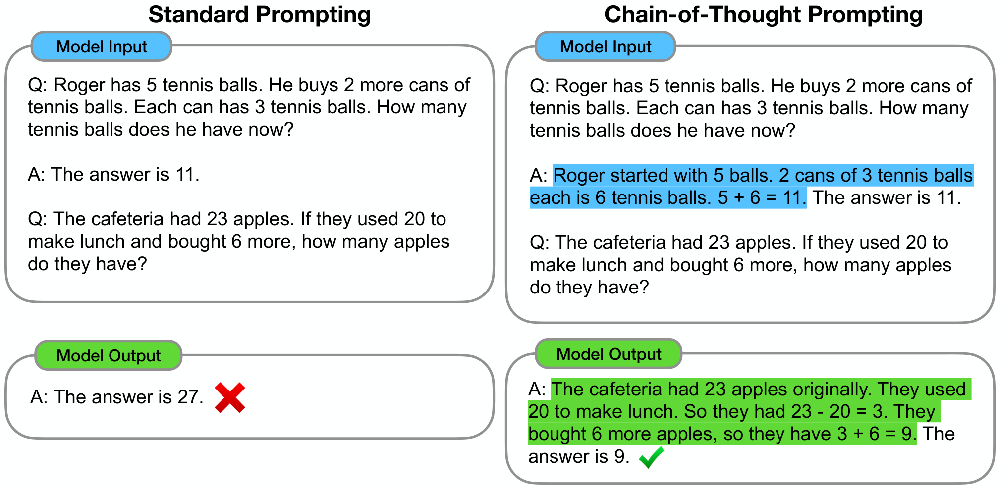
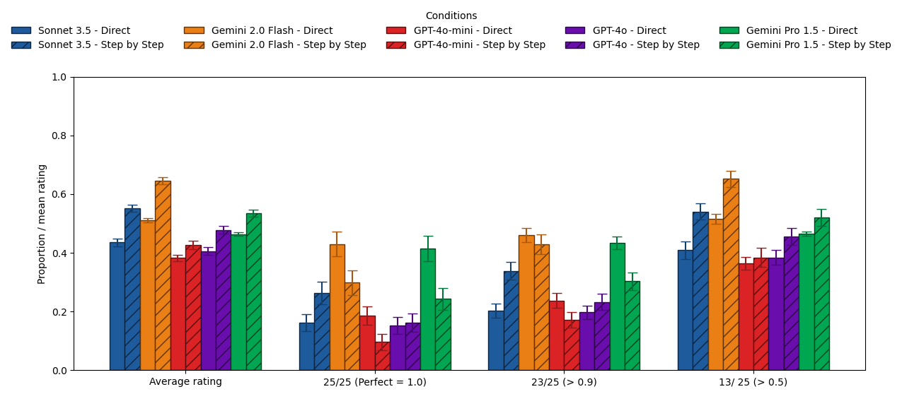

Hablar con un modelo por API
La conversación, los parámetros y el razonamiento. Cómo comparar prompts con datos y leer el código que los corre.
El mismo camino, ahora la llamada por API
Tres roles en una conversación
Sistema
Las reglas. Van aparte, al inicio de cada llamada.
Usuario
El pedido de cada turno.
Asistente
Las respuestas del modelo. En Gemini, este rol se llama «model».
En el bloque 2.1 vimos sistema y usuario. Lo nuevo es el asistente y la conversación de varios turnos.
Fuentes: Anthropic, Working with messages. Google, Text generation. Consulta: 24 de noviembre de 2026.
La API no recuerda: cada llamada reenvía todo
Anthropic: «The Messages API is stateless». Google: «the full conversation history is sent to the model with each follow-up turn». Conversación de FotoNube, una app ficticia.
Lo que se reenvía se paga otra vez
Toda la historia
Cada llamada paga como entrada los mensajes anteriores.
También el razonamiento
Claude Haiku 5.5 guarda los bloques de razonamiento de los turnos anteriores. Cuentan como entrada.
La caché abarata
Leer de la caché cuesta USD 0.01 por millón de tokens en Haiku 5.5. La entrada normal cuesta 0.10.
Fuentes: Anthropic, What's new in Claude Haiku 5.5 y Pricing, para prompts de hasta 100 000 tokens. Consulta: 24 de noviembre de 2026.
Los ejemplos también pueden ir como turnos
No puedo iniciar sesión desde el lunes.
cuenta y acceso, alta
La galería tarda diez segundos en abrir.
rendimiento, media
La app se cierra al subir una foto.
El modelo lee los pares como una conversación anterior. Y repite su forma.
Anthropic: «Earlier conversational turns don't necessarily need to actually originate from Claude».
Fuente: Anthropic, Working with messages. Tickets de FotoNube, una app ficticia.
Una plantilla arma los mensajes de cada caso
plantilla = ChatPromptTemplate.from_messages([
("system", INSTRUCCION),
("user", "<ticket>{ticket}</ticket>"),
])
mensajes = plantilla.invoke({"ticket": caso["texto"]})
El hueco {ticket} se llena con el texto de cada caso.
Así todos los casos reciben la misma instrucción. Solo cambia el ticket.
LangChain, ChatPromptTemplate de langchain-core 1.8. Probado sin clave con las versiones del curso.
El tablero de una llamada
Documentación de Claude Haiku 5.5, de Gemini y código de langchain-anthropic 1.7.10 y langchain-google-genai 4.5.0. Consulta: 24 de noviembre de 2026.
Una respuesta cortada no se puede validar
{"categoria": "fallo de la app",
"prioridad": "alta",
"resumen": "La app se cierra al su✂
Pydantic: Invalid JSON: EOF while parsing a string
Con Haiku 5.5, un máximo pequeño puede cortar la respuesta después del razonamiento y antes de cualquier texto.
Revisa la razón de parada. Si es max_tokens, la respuesta está incompleta.
Anthropic, guía de migración a Haiku 5.5. Error real de Pydantic 2.14: ejemplos/validar_ticket.py.
Los controles, en una línea de LangChain
modelo = init_chat_model(
"anthropic:claude-haiku-5-5",
max_tokens=1024, stop=["###"], effort="low",
timeout=30, max_retries=2,
)
Con Gemini 3.5 Flash-Lite cambia un nombre: thinking_level="minimal" en lugar de effort.
No hay temperature: los modelos del curso no la usan.
Probado sin clave con langchain 1.5.0, langchain-anthropic 1.7.10 y langchain-google-genai 4.5.0.
La cadena de pensamiento (Wei et al., 2022)

En GSM8K, un banco de problemas de matemáticas, PaLM 540B pasó de 17.9 % a 56.9 % de aciertos.
Figura 1 de Wei et al. (2022), Chain-of-Thought Prompting Elicits Reasoning in Large Language Models, NeurIPS. Licencia CC BY 4.0.
«Let's think step by step» (Kojima et al., 2022)
Sin ejemplos: solo una frase antes de responder. El modelo era text-davinci-002, de 2022.
Kojima et al. (2022), Large Language Models are Zero-Shot Reasoners, NeurIPS, tabla 2. Gráfico propio.
Los modelos de hoy ya razonan por dentro
Claude Haiku 5.5
El razonamiento adaptativo viene activo por defecto. Esos tokens se cobran como salida.
Gemini 3.5 Flash-Lite
Razona en nivel mínimo por defecto. Se puede subir con thinking_level.
«Prefer general instructions over prescriptive steps. A prompt such as “think thoroughly” often produces better reasoning than a hand-written step-by-step plan».
Anthropic, Prompting best practices. Google, Thinking. Consulta: 24 de noviembre de 2026.
Lo que midieron Meincke et al. (2025)
Cambio en el promedio de aciertos al pedir «Think step by step», en puntos. GPQA Diamond: 198 preguntas, 25 intentos cada una.
Y tarda más: de 35 % a 600 % más tiempo en los modelos sin razonamiento.
Meincke et al. (2025), Prompting Science Report 2, tablas S3 y S5. Licencia CC BY 4.0. Gráfico propio; la figura original va debajo.
La figura original de Meincke et al. (2025)

Figura 1 de Meincke et al. (2025). Licencia CC BY 4.0. Las cuatro medidas: promedio, 25 de 25, 23 de 25 y 13 de 25.
La regla: pruébalo en tus casos
- La cadena de pensamiento es una variante más del prompt.
- Mide sus aciertos, sus tokens y su tiempo en tus diez casos.
- Con un modelo que razona, prueba también a subir el esfuerzo.
Es una de las cuatro variantes del Laboratorio 3B.
Comparar prompts es un experimento
Los mismos casos
Todas las variantes corren sobre los mismos diez casos.
Un cambio a la vez
Si cambias dos piezas, no sabes cuál ayudó.
El criterio, antes
Decides qué es un acierto antes de ver los resultados.
Es el ciclo del bloque 3.1: el prompt cambia, los casos no.
Cuatro variantes para etiquetar un issue
Issue: «Al girar el teléfono, el botón de subir fotos queda fuera de la pantalla.»
Sin ejemplos
Etiqueta el issue con una sola etiqueta: error, mejora, documentación o pregunta.
Con tres ejemplos
La misma instrucción, más tres issues ya etiquetados.
Con formato explícito
Más: «Responde solo con la etiqueta, en minúsculas y sin explicación».
Con cadena de pensamiento
Más: «Antes de responder, razona paso a paso».
Las etiquetas siguen las que GitHub crea por defecto: bug, enhancement, documentation y question. Documentación de GitHub. Issues de FotoNube, una app ficticia.
La cuadrícula de variantes
La cuenta antes de correr
Python a nivel de lectura: cinco piezas
Variable
modelo = …Un nombre que guarda un valor.
Lista
[caso1, caso2]Varios valores en orden.
Diccionario
{"id": "T-01"}Claves y valores, como un JSON.
Función
def clasificar(…):Pasos con nombre, que se repiten.
Ciclo
for caso in casos:Repite los pasos para cada caso.
Un JSON se lee en Python como un diccionario. El esquema del bloque 3.1 es una clase.
Para repasar: el tutorial oficial de Python, en español.
Leer un programa corto
El programa completo y su prueba sin clave están en ejemplos/programa_corto.py y ejemplos/probar_programa.py.
Un asistente de código te ayuda a leer y a escribir
Para leer
«Explícame qué hace esta línea». «¿Qué devuelve esta función?»
Para escribir
Pídele el código junto con su prueba. Después corre la prueba.
GitHub Copilot. Gratis para estudiantes verificados con GitHub Education. Funciona en VS Code.
Claude Code. Necesita un plan de pago de Claude. Tiene extensión para VS Code.
Google Antigravity. Tiene un plan gratuito y extensión para VS Code.
Páginas oficiales: GitHub Copilot, Claude Code y Antigravity. Consulta: 24 de noviembre de 2026. Los logotipos solo identifican cada producto.
Tres cuidados con un asistente de código
La clave, nunca
No pegues la clave del curso en el chat del asistente. Vive en el archivo .env.
Los paquetes, verificados
Un asistente puede recomendar paquetes que no existen. Búscalo antes de instalarlo.
Las pruebas, siempre
El vibe coding (generar código describiéndolo) se permite en el proyecto, con pruebas.
Paquetes inventados: Spracklen et al. (2025), visto en el bloque 2.2. Vibe coding con pruebas: Anexo A.6 del curso.
Las pruebas de la capa 2
Cómo provocar los casos de robustez
Entrada incompleta
Un caso sin un dato clave. El campo debe quedar vacío, no inventado.
Respuesta mal formada
Un máximo de tokens muy bajo corta el JSON. También sirve una respuesta grabada rota.
Fuera de alcance
Un pedido que tu agente no debe atender. Debe caer en la salida que previste.
Cada caso tiene su resultado esperado, como los diez casos normales.
Cómo trabajar
- La clave del curso vive en un archivo
.env. Nunca va en el código ni se publica (Anexo A.7). - Mientras desarrollan, graben las respuestas y trabajen con ellas, para no gastar crédito (Anexo C.1).
- Los datos son sintéticos o anonimizados. Revisen los que genere un LLM antes de usarlos (Anexo C.7).
- Escriban el código con un asistente y con sus pruebas. Pueden partir del código de los laboratorios 3A y 3B.
Qué entregas al inicio del bloque 4.1
La sección 2 de la ficha
- El prompt de sistema
- El esquema de la salida
- Los resultados de la validación
- Los casos de robustez
Y el código de la capa, con sus resultados.
Vale el 5 % de la calificación. Se revisa con los criterios del Anexo D:
La sesión 3 en tres ideas
Instrucciones y un esquema
Un prompt con piezas, y una salida que se valida.
Una llamada con controles
Una conversación que se reenvía, parámetros y razonamiento.
Variantes que se miden
Los mismos casos, un cambio a la vez y cuatro medidas.
Para el próximo bloque: de los LLMs a los agentes
Anthropic (Erik S. y Barry Zhang) (2024, 19 de diciembre)
Building effective agents.
Unas 2 650 palabras. Solo en inglés.
¿Cuándo basta un flujo y cuándo hace falta un agente?
Las dos preguntas guía están en el trabajo independiente.
Laboratorio 3B: configurar un prompt
- Practicas comparar variantes de un prompt sobre los mismos casos. Etiquetas issues de un repositorio.
- Configuras la variante: sin ejemplos, con tres ejemplos, con formato explícito o con cadena de pensamiento.
- Mides los aciertos, los tokens, el costo por acierto y la latencia de cada variante.
No escribes código a mano: lees, ejecutas y configuras.
Sin clave de API, el notebook usa respuestas grabadas. Con la clave del curso, corre en vivo.
El notebook trae sus pruebas de funcionamiento y de robustez.
Club de lectura: OpenAI (2024)
Introducing Structured Outputs in the API. Lee la versión en español o el original en inglés.
- ¿Un campo para razonar? La sección «Separar una respuesta final del razonamiento de respaldo o comentario adicional» propone un campo aparte para razonar. ¿Lo incluirías en el esquema de tu agente, antes o después de la respuesta? ¿Por qué?
- ¿Qué campo puede salir válido pero equivocado? La sección «Limitaciones y restricciones» admite que un JSON válido puede traer valores equivocados. ¿Qué campo de tu esquema corre más ese riesgo? ¿Cómo lo revisaría tu agente antes de usarlo?
Después del club: Laboratorio 3B.
Referencias
OpenAI (2024, 6 de agosto). Introducing Structured Outputs in the API. Original · en español
Tam et al. (2024). Let Me Speak Freely? A Study On The Impact Of Format Restrictions On Large Language Model Performance. EMNLP, Industry Track. aclanthology.org
Wei et al. (2022). Chain-of-Thought Prompting Elicits Reasoning in Large Language Models. NeurIPS. arxiv.org
Kojima et al. (2022). Large Language Models are Zero-Shot Reasoners. NeurIPS. arxiv.org
Meincke, Mollick, Mollick y Shapiro (2025). Prompting Science Report 2. arxiv.org
Anthropic. Working with messages · Haiku 5.5: guía de migración · Effort · Precios
Google. Text generation · Thinking · Precios
LangChain. Modelos · ChatAnthropic · ChatGoogleGenerativeAI
Python. El tutorial de Python, en español.
Anthropic (2024, 19 de diciembre). Building effective agents. anthropic.com